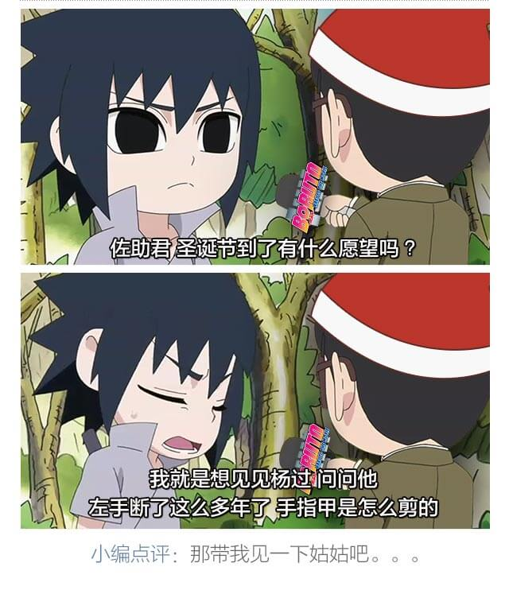
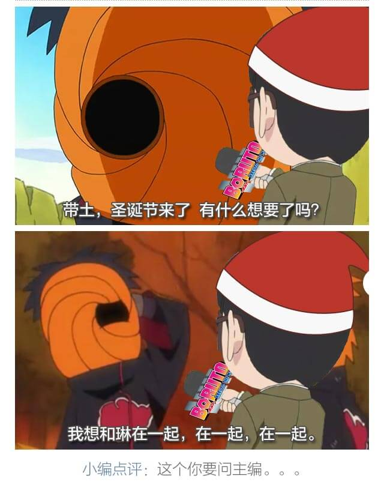

<?php
require_once "/etc/apache2/Developer/Sisobrand/wxjssdk/jssdk.php";
$jssdk = new JSSDK("wxb66fe8e6ed2e6e02", "c6702f33202d0b98badf453a5f7a7bfa");
$signPackage = $jssdk->GetSignPackage();
?>
<!DOCTYPE html>
<html>
<head lang="en">
    <meta charset="UTF-8">
    <meta name="apple-mobile-web-app-capable" content="yes">
    <meta content="telephone=no" name="format-detection">
    <meta content="maximum-dpr=2" name="flexible" />
    <meta name="apple-touch-fullscreen" content="no"/>
    <meta name="apple-mobile-web-app-status-bar-style" content="black-translucent"/>
    <title>圣诞节？简直日了个吉娃娃了</title>

    <!-- inject:css -->
    <link rel="stylesheet" href="assets/stylesheets/app.min.css">
    <!-- endinject -->
</head>
<body>
<!-- the class "content" is used for flexible plugin -->
<div class="content">
    
    
    
    <!--小樱-->
    
    
    
    
    

    <!--雏田-->
    
    
    
    <!--卡卡西-->
    
    
    
    
    

    

    <!--凯-->
    
    
    
    

    
    <!--鼬-->
    
    
    
    
    <!--鼬-->
    
    
    
</div>

<audio id="audio" src=""></audio>
<!-- inject:js -->
<script src="assets/scripts/app.min.js"></script>
<!-- endinject -->
<script src="http://res.wx.qq.com/open/js/jweixin-1.0.0.js"></script>
<script>
    // 微信分享设置
    wx.config({
        debug: false,
        appId: '<?php echo $signPackage["appId"];?>',
        timestamp: '<?php echo $signPackage["timestamp"];?>',
        nonceStr: '<?php echo $signPackage["nonceStr"];?>',
        signature: '<?php echo $signPackage["signature"];?>',
        jsApiList: ['onMenuShareAppMessage', 'onMenuShareTimeline']
    });

    // config信息验证后会执行ready方法，所有接口调用都必须在config接口获得结果之后，config是一个客户端的异步操作，所以如果需要在页面加载时就调用相关接口，则须把相关接口放在ready函数中调用来确保正确执行。对于用户触发时才调用的接口，则可以直接调用，不需要放在ready函数中。
    wx.ready(function(){
        // 获取“分享到朋友圈”按钮点击状态及自定义分享内容接口
        wx.onMenuShareTimeline({
            title: '圣诞节？简直日了个吉娃娃了....', // 分享标题
            link: 'http://www.sisobrand.com/h5/huoying/', // 分享链接
            imgUrl: 'http://www.sisobrand.com/h5/huoying/assets/images/head.jpg', // 分享图标
            success: function () {
            },
            cancel: function () {
            }
        });

        // 获取“分享给朋友”按钮点击状态及自定义分享内容接口
        wx.onMenuShareAppMessage({
            title: '圣诞节？简直日了个吉娃娃了....', // 分享标题
            desc: '', // 分享描述
            link: 'http://www.sisobrand.com/h5/huoying/',// 分享链接
            imgUrl: 'http://www.sisobrand.com/h5/huoying/assets/images/head.jpg', // 分享图标
            type: '', // 分享类型,music、video或link，不填默认为link
            dataUrl: '', // 如果type是music或video，则要提供数据链接，默认为空
            success: function () {
            },
            cancel: function () {
            }
        });
    })
</script>
<script>
    var _hmt = _hmt || [];
    (function() {
        var hm = document.createElement("script");
        hm.src = "//hm.baidu.com/hm.js?2b2c10aefd47dbe0e7bb3ccb66ad7b1e";
        var s = document.getElementsByTagName("script")[0];
        s.parentNode.insertBefore(hm, s);
    })();
</script>
</body>
</html>